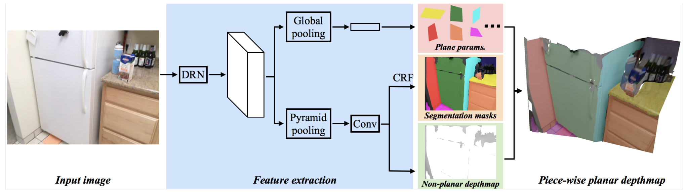
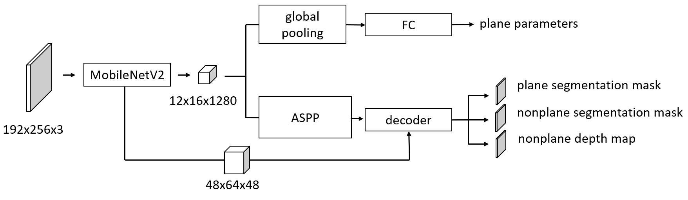
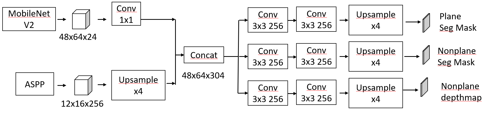
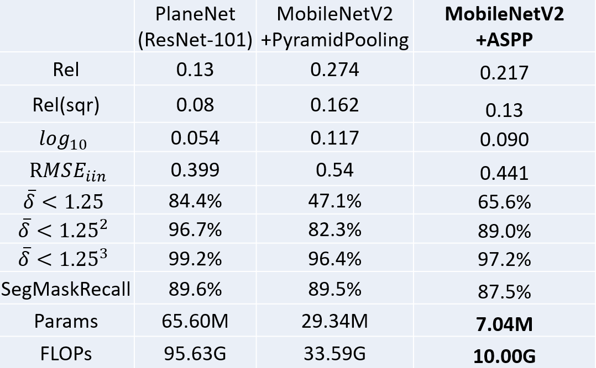
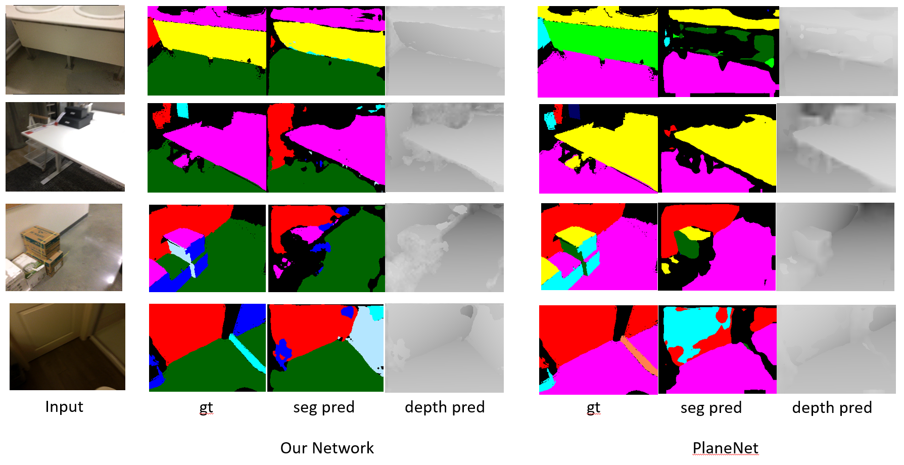

Background
PlaneNet (C. Liu et al., CVPR, 2018) is a successful tool for 3D Reconstruction from monocular images, especially for indoor scenarios. However, it is commonly agreed that deep neural networks are computationally expensive. Here we want to compress PlaneNet for practical industrial usage.
Learn more about PlaneNet: http://art-programmer.github.io/planenet.html
Demo
This video was recorded in our meeting room with an RGBD camera. The prediction part is the output of our compressed network.
Method
We almost changed all components in the PlaneNet, including backbone network, pyramid pooling, and implementation of convolution.
Original network structure from (C. Liu et al., CVPR, 2018):
Our structure:
MobileNetV2 (Sandler et al., CVPR, 2018) + atrous spatial pyramid pooling (ASPP) from DeepLabV2 (Chen et al., CVPR, 2016):
Decoder:
Result
For indoor scenarios, most objects are artificial. There are always planes in man-made artifacts like desks, walls, and screens. As a result, we will focus on the accuracy of depth estimation of plane areas here.
As we can learn from the table, depth estimation accuracy drops slightly while computation cost is vastly reduced in our network.
Our network even out-performance PlaneNet in some cases, as shown above.